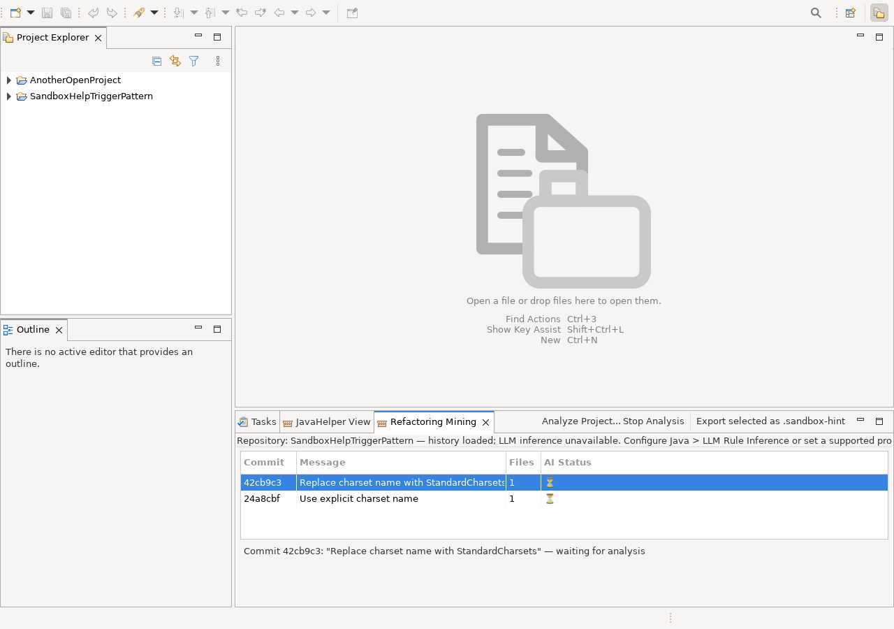

Refactoring Mining looks at concrete source changes and asks whether a change can be expressed as a reusable TriggerPattern DSL rule. The LLM proposes the generalization; Sandbox validates the returned DSL before presenting it as a candidate.

The analysis uses one bounded, user-visible Eclipse job. The view reports analyzed/total, active, and queued work; Stop Analysis cancels the active request and prevents queued commits from starting. When no LLM provider is configured, the history remains inspectable but AI analysis is not scheduled.
Mining is an analysis aid, not an automatic semantic proof. A green or valid DSL result means that the rule is syntactically accepted by the DSL validator; it does not prove that every future match preserves program behavior.
For each changed Java file, Sandbox reconstructs a unified diff from the commit. That diff is passed to the shared rule-inference engine. Non-Java changes are not part of this mining path.
commit |- Java file diff 1 --> infer candidate rule --> validate DSL |- Java file diff 2 --> infer candidate rule --> validate DSL `- ...
If you already have a unified diff, you do not need to scan repository history:
.sandbox-hint file is created in the active editor's project and opened for review.The active text editor determines the target project. Sandbox does not silently write the generated rule to the first project in a multi-project workspace. Missing provider configuration, a provider failure, and a successful inference that produces no usable rule are reported explicitly.
Use Mine DSL rules from working tree... when the before-state is the project's committed HEAD and the after-state is the Java source currently present in the working tree.
HEAD tree with the current filesystem working tree and considers changed Java files..sandbox-hint file in that same project and opens it for review.If there are no Java working-tree changes, or if the changes produce no reusable rule, Sandbox reports that outcome instead of silently doing nothing.
A commit that repeatedly replaces a charset name with a typed constant could contain a change like this:
-new String(bytes, "UTF-8") +new String(bytes, StandardCharsets.UTF_8)
The useful mining result is not a copy of that one edit. It is a generalized rule that captures the replaceable expression and the conditions under which the replacement is safe.
Back to overview | Selection and wizard authoring | Apply a reviewed rule